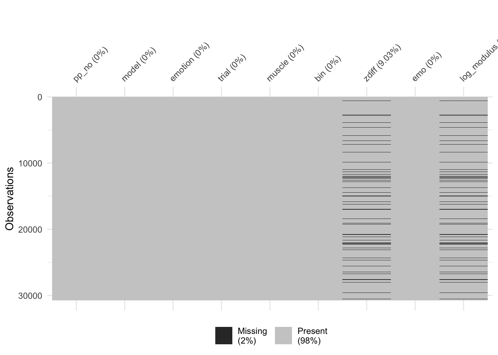

Last updated: 2020-09-16
Checks: 6 1
Knit directory: RILEY_Hons/
This reproducible R Markdown analysis was created with workflowr (version 1.6.2). The Checks tab describes the reproducibility checks that were applied when the results were created. The Past versions tab lists the development history.
The R Markdown is untracked by Git. To know which version of the R Markdown file created these results, you’ll want to first commit it to the Git repo. If you’re still working on the analysis, you can ignore this warning. When you’re finished, you can run wflow_publish to commit the R Markdown file and build the HTML.
Great job! The global environment was empty. Objects defined in the global environment can affect the analysis in your R Markdown file in unknown ways. For reproduciblity it’s best to always run the code in an empty environment.
The command set.seed(20200903) was run prior to running the code in the R Markdown file. Setting a seed ensures that any results that rely on randomness, e.g. subsampling or permutations, are reproducible.
Great job! Recording the operating system, R version, and package versions is critical for reproducibility.
Nice! There were no cached chunks for this analysis, so you can be confident that you successfully produced the results during this run.
Great job! Using relative paths to the files within your workflowr project makes it easier to run your code on other machines.
Great! You are using Git for version control. Tracking code development and connecting the code version to the results is critical for reproducibility.
The results in this page were generated with repository version 8095709. See the Past versions tab to see a history of the changes made to the R Markdown and HTML files.
Note that you need to be careful to ensure that all relevant files for the analysis have been committed to Git prior to generating the results (you can use wflow_publish or wflow_git_commit). workflowr only checks the R Markdown file, but you know if there are other scripts or data files that it depends on. Below is the status of the Git repository when the results were generated:
Ignored files:
Ignored: .Rhistory
Ignored: .Rproj.user/
Ignored: analysis/child_bar_plot.png
Ignored: analysis/child_cheek_plot.png
Ignored: analysis/child_cheekbin_plot.png
Ignored: analysis/figure/
Untracked files:
Untracked: analysis/adult_child_plot_analyses.Rmd
Unstaged changes:
Modified: analysis/all_emo_child_analysis.Rmd
Note that any generated files, e.g. HTML, png, CSS, etc., are not included in this status report because it is ok for generated content to have uncommitted changes.
There are no past versions. Publish this analysis with wflow_publish() to start tracking its development.
library(tidyverse)
library(here)
library(lme4)
library(lmerTest)
library(broom.mixed)
library(pixiedust)
library(beepr)
library(ggplot2)
library(ggeasy)
library(dplyr)
library(papaja)Goal here is to work out whether it is possible to compare responses to child and adult faces i.e. to include model in the model.
df <- read_csv(here::here("data", "adult_child_combined", "zdiff_binscreened2.csv"))Parsed with column specification:
cols(
pp_no = col_character(),
model = col_character(),
emotion = col_double(),
trial = col_character(),
muscle = col_character(),
bin = col_character(),
zdiff = col_double(),
emo = col_character()
)add log modulus
df <- df %>% mutate_if(is.character, as.factor) %>%
mutate(log_modulus = sign(zdiff) * log(1+abs(zdiff)))
glimpse(df)Rows: 61,480
Columns: 9
$ pp_no <fct> pp401, pp401, pp401, pp401, pp401, pp401, pp401, pp401, p…
$ model <fct> adult, adult, adult, adult, adult, adult, adult, adult, a…
$ emotion <dbl> 131, 131, 131, 131, 131, 131, 131, 131, 131, 131, 131, 13…
$ trial <fct> trial1, trial1, trial1, trial1, trial1, trial1, trial1, t…
$ muscle <fct> brow, brow, brow, brow, brow, brow, brow, brow, brow, bro…
$ bin <fct> diff_bin1, diff_bin10, diff_bin2, diff_bin3, diff_bin4, d…
$ zdiff <dbl> 0.133992486, -0.672344142, 0.034300886, -0.126145600, -0.…
$ emo <fct> happy, happy, happy, happy, happy, happy, happy, happy, h…
$ log_modulus <dbl> 0.125744579, -0.514226320, 0.033725726, -0.118800829, -0.…cheek
cheek_data <- df %>%
filter(emo %in% c("happy", "angry","fear", "sad")) %>%
filter(muscle == "cheek") %>%
arrange(pp_no, model, trial, bin)
cheek_data$emo <- fct_relevel(cheek_data$emo, c("happy", "angry", "fear", "sad"))
cheek_data$bin <- fct_relevel(cheek_data$bin, c("diff_bin1", "diff_bin2", "diff_bin3", "diff_bin4", "diff_bin5", "diff_bin6", "diff_bin7", "diff_bin8", "diff_bin9", "diff_bin10"))
levels(cheek_data$bin) [1] "diff_bin1" "diff_bin2" "diff_bin3" "diff_bin4" "diff_bin5"
[6] "diff_bin6" "diff_bin7" "diff_bin8" "diff_bin9" "diff_bin10"add “model” to best fit from 9_cheek_analysis
This model adds model to best fit model (including slopes for emo)
adult_cheek_lm_2 <- lmer(log_modulus ~ emo + bin + emo*bin + (1 + emo|pp_no) , data = HA_adult_cheek, REML = FALSE)
cheek_lm_1 <- lmer(log_modulus ~ emo + bin + model +
emo*bin + bin*model +
emo*bin*model +
(1 + emo|pp_no) ,
data = cheek_data, REML = FALSE)
beepr::beep()cheek_lm_2 <- lmer(log_modulus ~ emo + bin + model +
emo*bin + bin*model +
emo*bin*model +
(1|pp_no) ,
data = cheek_data, REML = FALSE)
beepr::beep()Model with slope does better than model without.
AIC(cheek_lm_1)[1] 27557.44AIC(cheek_lm_2)[1] 28261.63anova(cheek_lm_1, cheek_lm_2)Data: cheek_data
Models:
cheek_lm_2: log_modulus ~ emo + bin + model + emo * bin + bin * model + emo *
cheek_lm_2: bin * model + (1 | pp_no)
cheek_lm_1: log_modulus ~ emo + bin + model + emo * bin + bin * model + emo *
cheek_lm_1: bin * model + (1 + emo | pp_no)
npar AIC BIC logLik deviance Chisq Df Pr(>Chisq)
cheek_lm_2 82 28262 28935 -14049 28098
cheek_lm_1 91 27557 28304 -13688 27375 722.19 9 < 2.2e-16 ***
---
Signif. codes: 0 '***' 0.001 '**' 0.01 '*' 0.05 '.' 0.1 ' ' 1summary(cheek_lm_1)Linear mixed model fit by maximum likelihood . t-tests use Satterthwaite's
method [lmerModLmerTest]
Formula: log_modulus ~ emo + bin + model + emo * bin + bin * model + emo *
bin * model + (1 + emo | pp_no)
Data: cheek_data
AIC BIC logLik deviance df.resid
27557.4 28304.3 -13687.7 27375.4 26996
Scaled residuals:
Min 1Q Median 3Q Max
-4.2052 -0.4465 -0.0413 0.3537 6.9088
Random effects:
Groups Name Variance Std.Dev. Corr
pp_no (Intercept) 0.01679 0.1296
emoangry 0.01928 0.1388 -0.77
emofear 0.02576 0.1605 -0.89 0.79
emosad 0.01885 0.1373 -0.86 0.70 0.77
Residual 0.15849 0.3981
Number of obs: 27087, groups: pp_no, 50
Fixed effects:
Estimate Std. Error df t value
(Intercept) -2.336e-02 2.847e-02 2.537e+02 -0.820
emoangry 8.924e-03 3.656e-02 4.720e+02 0.244
emofear -2.788e-02 3.813e-02 3.329e+02 -0.731
emosad -1.180e-02 3.630e-02 4.784e+02 -0.325
bindiff_bin2 -3.190e-02 3.045e-02 2.689e+04 -1.047
bindiff_bin3 -2.954e-02 3.050e-02 2.689e+04 -0.969
bindiff_bin4 1.635e-02 3.052e-02 2.689e+04 0.536
bindiff_bin5 1.706e-02 3.059e-02 2.689e+04 0.558
bindiff_bin6 3.387e-02 3.059e-02 2.689e+04 1.107
bindiff_bin7 5.770e-02 3.046e-02 2.689e+04 1.895
bindiff_bin8 7.893e-02 3.068e-02 2.689e+04 2.573
bindiff_bin9 1.033e-01 3.070e-02 2.689e+04 3.366
bindiff_bin10 8.942e-02 3.093e-02 2.689e+04 2.891
modelchild -3.652e-02 3.090e-02 2.689e+04 -1.182
emoangry:bindiff_bin2 3.144e-03 4.327e-02 2.689e+04 0.073
emofear:bindiff_bin2 4.789e-02 4.296e-02 2.689e+04 1.115
emosad:bindiff_bin2 2.575e-02 4.311e-02 2.689e+04 0.597
emoangry:bindiff_bin3 5.368e-03 4.322e-02 2.689e+04 0.124
emofear:bindiff_bin3 6.790e-02 4.303e-02 2.689e+04 1.578
emosad:bindiff_bin3 1.085e-02 4.302e-02 2.689e+04 0.252
emoangry:bindiff_bin4 -4.813e-02 4.318e-02 2.689e+04 -1.115
emofear:bindiff_bin4 1.865e-02 4.308e-02 2.689e+04 0.433
emosad:bindiff_bin4 -4.376e-02 4.305e-02 2.689e+04 -1.017
emoangry:bindiff_bin5 -3.683e-02 4.327e-02 2.689e+04 -0.851
emofear:bindiff_bin5 2.386e-02 4.305e-02 2.689e+04 0.554
emosad:bindiff_bin5 -1.564e-02 4.321e-02 2.689e+04 -0.362
emoangry:bindiff_bin6 -6.321e-02 4.329e-02 2.689e+04 -1.460
emofear:bindiff_bin6 -9.290e-03 4.302e-02 2.689e+04 -0.216
emosad:bindiff_bin6 -2.981e-02 4.321e-02 2.689e+04 -0.690
emoangry:bindiff_bin7 -5.304e-02 4.313e-02 2.689e+04 -1.230
emofear:bindiff_bin7 -1.184e-02 4.297e-02 2.689e+04 -0.275
emosad:bindiff_bin7 -6.420e-02 4.300e-02 2.689e+04 -1.493
emoangry:bindiff_bin8 -6.893e-02 4.348e-02 2.689e+04 -1.585
emofear:bindiff_bin8 -4.727e-02 4.322e-02 2.689e+04 -1.094
emosad:bindiff_bin8 -6.996e-02 4.327e-02 2.689e+04 -1.617
emoangry:bindiff_bin9 -8.945e-02 4.343e-02 2.689e+04 -2.060
emofear:bindiff_bin9 -2.578e-02 4.317e-02 2.689e+04 -0.597
emosad:bindiff_bin9 -7.681e-02 4.330e-02 2.689e+04 -1.774
emoangry:bindiff_bin10 -1.094e-01 4.364e-02 2.689e+04 -2.507
emofear:bindiff_bin10 -3.670e-02 4.367e-02 2.689e+04 -0.840
emosad:bindiff_bin10 -4.974e-02 4.361e-02 2.689e+04 -1.141
bindiff_bin2:modelchild 1.104e-02 4.329e-02 2.689e+04 0.255
bindiff_bin3:modelchild 2.200e-02 4.329e-02 2.689e+04 0.508
bindiff_bin4:modelchild -2.472e-02 4.335e-02 2.689e+04 -0.570
bindiff_bin5:modelchild 2.085e-03 4.335e-02 2.689e+04 0.048
bindiff_bin6:modelchild 4.573e-03 4.338e-02 2.689e+04 0.105
bindiff_bin7:modelchild -1.402e-02 4.321e-02 2.689e+04 -0.324
bindiff_bin8:modelchild -3.023e-02 4.349e-02 2.689e+04 -0.695
bindiff_bin9:modelchild -4.183e-02 4.363e-02 2.689e+04 -0.959
bindiff_bin10:modelchild -4.039e-02 4.383e-02 2.689e+04 -0.922
emoangry:modelchild 9.843e-03 4.379e-02 2.690e+04 0.225
emofear:modelchild 3.779e-02 4.381e-02 2.690e+04 0.863
emosad:modelchild 1.507e-02 4.366e-02 2.690e+04 0.345
emoangry:bindiff_bin2:modelchild 1.338e-02 6.143e-02 2.689e+04 0.218
emofear:bindiff_bin2:modelchild 1.034e-02 6.133e-02 2.689e+04 0.169
emosad:bindiff_bin2:modelchild -1.015e-02 6.133e-02 2.689e+04 -0.165
emoangry:bindiff_bin3:modelchild -2.543e-02 6.136e-02 2.689e+04 -0.415
emofear:bindiff_bin3:modelchild -5.406e-02 6.132e-02 2.689e+04 -0.882
emosad:bindiff_bin3:modelchild -3.611e-03 6.125e-02 2.689e+04 -0.059
emoangry:bindiff_bin4:modelchild 9.068e-03 6.137e-02 2.689e+04 0.148
emofear:bindiff_bin4:modelchild -3.884e-03 6.141e-02 2.689e+04 -0.063
emosad:bindiff_bin4:modelchild 3.204e-02 6.127e-02 2.689e+04 0.523
emoangry:bindiff_bin5:modelchild -2.237e-02 6.140e-02 2.689e+04 -0.364
emofear:bindiff_bin5:modelchild -1.941e-02 6.139e-02 2.689e+04 -0.316
emosad:bindiff_bin5:modelchild 2.420e-03 6.135e-02 2.689e+04 0.039
emoangry:bindiff_bin6:modelchild 2.780e-02 6.149e-02 2.689e+04 0.452
emofear:bindiff_bin6:modelchild 1.832e-03 6.134e-02 2.689e+04 0.030
emosad:bindiff_bin6:modelchild -1.119e-02 6.147e-02 2.689e+04 -0.182
emoangry:bindiff_bin7:modelchild -5.812e-03 6.125e-02 2.689e+04 -0.095
emofear:bindiff_bin7:modelchild -2.877e-03 6.125e-02 2.689e+04 -0.047
emosad:bindiff_bin7:modelchild 6.768e-02 6.119e-02 2.689e+04 1.106
emoangry:bindiff_bin8:modelchild 4.302e-02 6.162e-02 2.689e+04 0.698
emofear:bindiff_bin8:modelchild 5.763e-02 6.157e-02 2.689e+04 0.936
emosad:bindiff_bin8:modelchild 3.857e-02 6.155e-02 2.689e+04 0.627
emoangry:bindiff_bin9:modelchild 4.259e-02 6.168e-02 2.689e+04 0.691
emofear:bindiff_bin9:modelchild 1.322e-02 6.162e-02 2.689e+04 0.215
emosad:bindiff_bin9:modelchild 9.106e-02 6.159e-02 2.689e+04 1.478
emoangry:bindiff_bin10:modelchild 6.026e-02 6.208e-02 2.689e+04 0.971
emofear:bindiff_bin10:modelchild 1.815e-02 6.212e-02 2.689e+04 0.292
emosad:bindiff_bin10:modelchild 6.227e-02 6.200e-02 2.689e+04 1.004
Pr(>|t|)
(Intercept) 0.412758
emoangry 0.807262
emofear 0.465088
emosad 0.745230
bindiff_bin2 0.294879
bindiff_bin3 0.332715
bindiff_bin4 0.592221
bindiff_bin5 0.576989
bindiff_bin6 0.268215
bindiff_bin7 0.058150 .
bindiff_bin8 0.010089 *
bindiff_bin9 0.000763 ***
bindiff_bin10 0.003841 **
modelchild 0.237248
emoangry:bindiff_bin2 0.942085
emofear:bindiff_bin2 0.264958
emosad:bindiff_bin2 0.550260
emoangry:bindiff_bin3 0.901174
emofear:bindiff_bin3 0.114625
emosad:bindiff_bin3 0.800809
emoangry:bindiff_bin4 0.265020
emofear:bindiff_bin4 0.665058
emosad:bindiff_bin4 0.309358
emoangry:bindiff_bin5 0.394690
emofear:bindiff_bin5 0.579465
emosad:bindiff_bin5 0.717345
emoangry:bindiff_bin6 0.144232
emofear:bindiff_bin6 0.829034
emosad:bindiff_bin6 0.490279
emoangry:bindiff_bin7 0.218797
emofear:bindiff_bin7 0.782967
emosad:bindiff_bin7 0.135502
emoangry:bindiff_bin8 0.112865
emofear:bindiff_bin8 0.274125
emosad:bindiff_bin8 0.105907
emoangry:bindiff_bin9 0.039441 *
emofear:bindiff_bin9 0.550436
emosad:bindiff_bin9 0.076083 .
emoangry:bindiff_bin10 0.012181 *
emofear:bindiff_bin10 0.400709
emosad:bindiff_bin10 0.254088
bindiff_bin2:modelchild 0.798765
bindiff_bin3:modelchild 0.611252
bindiff_bin4:modelchild 0.568471
bindiff_bin5:modelchild 0.961633
bindiff_bin6:modelchild 0.916058
bindiff_bin7:modelchild 0.745619
bindiff_bin8:modelchild 0.486976
bindiff_bin9:modelchild 0.337658
bindiff_bin10:modelchild 0.356703
emoangry:modelchild 0.822157
emofear:modelchild 0.388403
emosad:modelchild 0.730033
emoangry:bindiff_bin2:modelchild 0.827519
emofear:bindiff_bin2:modelchild 0.866098
emosad:bindiff_bin2:modelchild 0.868600
emoangry:bindiff_bin3:modelchild 0.678478
emofear:bindiff_bin3:modelchild 0.378046
emosad:bindiff_bin3:modelchild 0.952988
emoangry:bindiff_bin4:modelchild 0.882533
emofear:bindiff_bin4:modelchild 0.949566
emosad:bindiff_bin4:modelchild 0.601016
emoangry:bindiff_bin5:modelchild 0.715637
emofear:bindiff_bin5:modelchild 0.751875
emosad:bindiff_bin5:modelchild 0.968532
emoangry:bindiff_bin6:modelchild 0.651150
emofear:bindiff_bin6:modelchild 0.976170
emosad:bindiff_bin6:modelchild 0.855503
emoangry:bindiff_bin7:modelchild 0.924398
emofear:bindiff_bin7:modelchild 0.962534
emosad:bindiff_bin7:modelchild 0.268722
emoangry:bindiff_bin8:modelchild 0.485129
emofear:bindiff_bin8:modelchild 0.349271
emosad:bindiff_bin8:modelchild 0.530867
emoangry:bindiff_bin9:modelchild 0.489877
emofear:bindiff_bin9:modelchild 0.830076
emosad:bindiff_bin9:modelchild 0.139314
emoangry:bindiff_bin10:modelchild 0.331720
emofear:bindiff_bin10:modelchild 0.770135
emosad:bindiff_bin10:modelchild 0.315269
---
Signif. codes: 0 '***' 0.001 '**' 0.01 '*' 0.05 '.' 0.1 ' ' 1
Correlation matrix not shown by default, as p = 80 > 12.
Use print(x, correlation=TRUE) or
vcov(x) if you need ittidy_cheek1 <- tidy(cheek_lm_1)#plot cheek data for all emo
cheek_plot <- cheek_data %>%
arrange(pp_no, model, trial, bin)#create new column called time_bin
cheek_plot$time_bin <- cheek_plot$bin
cheek_plot <- cheek_plot %>%
mutate(time_bin = recode(bin, "diff_bin1" = "100",
"diff_bin2" = "200",
"diff_bin3" = "300",
"diff_bin4" = "400",
"diff_bin5" = "500",
"diff_bin6" = "600",
"diff_bin7" = "700",
"diff_bin8" = "800",
"diff_bin9" = "900",
"diff_bin10" = "1000", .default = "NA"))plot <- cheek_plot %>%
group_by(time_bin, model, emo) %>%
summarise(meanZ = mean(zdiff, na.rm = TRUE), sd_RMS = sd(zdiff, na.rm = TRUE), n = n(), stderr = sd_RMS/sqrt(n)) %>%
ggplot(aes(x = time_bin, y = meanZ, group = model, colour = model)) +
geom_point() +
geom_line() +
scale_colour_grey(start = 0.2, end = 0.6) +
geom_errorbar(aes(ymin = meanZ-stderr, ymax = meanZ+stderr), size = .4, width = .4) +
theme_classic() +
theme(panel.grid.major = element_blank(), panel.grid.minor = element_blank(), panel.background = element_rect(colour = "black", size = 1)) +
facet_wrap(~emo) +
scale_y_continuous(limits = c(-0.15, 0.25)) +
labs(y = "Mean difference in muscle activity
(baseline corrected z-score)", x = "Time post-stimulus presentation onset (ms)") +
easy_x_axis_title_size(size = 12) +
easy_y_axis_title_size(size = 12)`summarise()` regrouping output by 'time_bin', 'model' (override with `.groups` argument)print(plot)Warning: Removed 4 rows containing missing values (geom_errorbar).#plot averaged across bins
plot <- cheek_plot %>%
group_by(model, emo) %>%
summarise(meanZ = mean(zdiff, na.rm = TRUE), sd_RMS = sd(zdiff, na.rm = TRUE), n = n(), stderr = sd_RMS/sqrt(n)) %>%
ggplot(aes(x = emo, y = meanZ, fill = model)) +
geom_col(position = "dodge") +
theme_apa(base_size = 14) +
scale_fill_grey(start = 0.2, end = 0.9) +
geom_errorbar(aes(ymin = meanZ-stderr, ymax = meanZ+stderr), size = .4, width = .4, position = position_dodge(.9)) +
theme_classic() +
theme(panel.grid.major = element_blank(), panel.grid.minor = element_blank(), panel.background = element_rect(colour = "black", size = 1)) +
scale_y_continuous(limits = c(-0.1, 0.1)) +
labs(y = "Mean z-score difference (RMS) from baseline
(averaged across bins)", x = "Emotion") +
easy_x_axis_title_size(size = 12) +
easy_y_axis_title_size(size = 12)`summarise()` regrouping output by 'model' (override with `.groups` argument)print(plot)
###all emotions for brow
brow_data <- df %>%
filter(emo %in% c("happy", "angry", "fear", "sad")) %>%
filter(muscle == "brow") %>%
arrange(pp_no, model, trial, bin)
brow_data$emo <- fct_relevel(brow_data$emo, c("happy", "angry", "fear", "sad"))
brow_data$bin <- fct_relevel(brow_data$bin, c("diff_bin1", "diff_bin2", "diff_bin3", "diff_bin4", "diff_bin5", "diff_bin6", "diff_bin7", "diff_bin8", "diff_bin9", "diff_bin10"))
levels(brow_data$bin) [1] "diff_bin1" "diff_bin2" "diff_bin3" "diff_bin4" "diff_bin5"
[6] "diff_bin6" "diff_bin7" "diff_bin8" "diff_bin9" "diff_bin10"add “model” to best fit from 10_brow_analysis
This model adds model to best fit model (including slopes for emo)
child_brow_lm_2 <- lmer(log_modulus_new ~ emo + bin + emo*bin + (1 + emo|pp_no), data = HA_child_brow, REML = FALSE)
brow_lm_1 <- lmer(log_modulus ~ emo + bin + model +
emo*bin + bin*model +
emo*bin*model +
(1 + emo|pp_no) ,
data = brow_data, REML = FALSE)
beepr::beep()does it do better than model without slopes for emo?
brow_lm_2 <- lmer(log_modulus ~ emo + bin + model +
emo*bin + bin*model +
emo*bin*model +
(1|pp_no) ,
data = brow_data, REML = FALSE)
beepr::beep()yes model with slope does better than model without.
AIC(brow_lm_1)[1] 32862.95AIC(brow_lm_2)[1] 33453anova(brow_lm_1, brow_lm_2)Data: brow_data
Models:
brow_lm_2: log_modulus ~ emo + bin + model + emo * bin + bin * model + emo *
brow_lm_2: bin * model + (1 | pp_no)
brow_lm_1: log_modulus ~ emo + bin + model + emo * bin + bin * model + emo *
brow_lm_1: bin * model + (1 + emo | pp_no)
npar AIC BIC logLik deviance Chisq Df Pr(>Chisq)
brow_lm_2 82 33453 34129 -16644 33289
brow_lm_1 91 32863 33613 -16340 32681 608.05 9 < 2.2e-16 ***
---
Signif. codes: 0 '***' 0.001 '**' 0.01 '*' 0.05 '.' 0.1 ' ' 1summary(brow_lm_1)Linear mixed model fit by maximum likelihood . t-tests use Satterthwaite's
method [lmerModLmerTest]
Formula: log_modulus ~ emo + bin + model + emo * bin + bin * model + emo *
bin * model + (1 + emo | pp_no)
Data: brow_data
AIC BIC logLik deviance df.resid
32862.9 33612.7 -16340.5 32680.9 27873
Scaled residuals:
Min 1Q Median 3Q Max
-4.5590 -0.5498 -0.0505 0.4955 6.2087
Random effects:
Groups Name Variance Std.Dev. Corr
pp_no (Intercept) 0.007158 0.0846
emoangry 0.015789 0.1257 -0.61
emofear 0.017755 0.1332 -0.55 0.70
emosad 0.014872 0.1220 -0.75 0.40 0.22
Residual 0.185821 0.4311
Number of obs: 27964, groups: pp_no, 50
Fixed effects:
Estimate Std. Error df t value
(Intercept) -7.133e-03 2.594e-02 7.311e+02 -0.275
emoangry -4.290e-02 3.716e-02 6.495e+02 -1.154
emofear -3.682e-02 3.761e-02 5.399e+02 -0.979
emosad -1.230e-02 3.700e-02 7.340e+02 -0.332
bindiff_bin2 -2.727e-02 3.247e-02 2.776e+04 -0.840
bindiff_bin3 -2.091e-02 3.245e-02 2.776e+04 -0.644
bindiff_bin4 -4.068e-03 3.234e-02 2.776e+04 -0.126
bindiff_bin5 -2.444e-03 3.252e-02 2.776e+04 -0.075
bindiff_bin6 -1.962e-02 3.238e-02 2.776e+04 -0.606
bindiff_bin7 -1.736e-02 3.252e-02 2.776e+04 -0.534
bindiff_bin8 -2.156e-02 3.250e-02 2.776e+04 -0.664
bindiff_bin9 -1.759e-02 3.245e-02 2.776e+04 -0.542
bindiff_bin10 -3.537e-02 3.247e-02 2.776e+04 -1.089
modelchild -4.002e-02 3.277e-02 2.778e+04 -1.221
emoangry:bindiff_bin2 6.199e-02 4.609e-02 2.776e+04 1.345
emofear:bindiff_bin2 6.295e-02 4.591e-02 2.776e+04 1.371
emosad:bindiff_bin2 4.070e-02 4.590e-02 2.776e+04 0.887
emoangry:bindiff_bin3 3.534e-02 4.599e-02 2.776e+04 0.768
emofear:bindiff_bin3 9.227e-02 4.581e-02 2.776e+04 2.014
emosad:bindiff_bin3 8.798e-03 4.589e-02 2.776e+04 0.192
emoangry:bindiff_bin4 -1.211e-02 4.582e-02 2.776e+04 -0.264
emofear:bindiff_bin4 3.276e-02 4.573e-02 2.776e+04 0.716
emosad:bindiff_bin4 -3.252e-02 4.582e-02 2.776e+04 -0.710
emoangry:bindiff_bin5 2.216e-03 4.599e-02 2.776e+04 0.048
emofear:bindiff_bin5 5.683e-02 4.591e-02 2.776e+04 1.238
emosad:bindiff_bin5 -9.309e-03 4.606e-02 2.776e+04 -0.202
emoangry:bindiff_bin6 3.399e-02 4.588e-02 2.776e+04 0.741
emofear:bindiff_bin6 5.050e-02 4.584e-02 2.776e+04 1.102
emosad:bindiff_bin6 2.911e-02 4.592e-02 2.776e+04 0.634
emoangry:bindiff_bin7 3.790e-02 4.594e-02 2.776e+04 0.825
emofear:bindiff_bin7 3.166e-02 4.580e-02 2.776e+04 0.691
emosad:bindiff_bin7 5.254e-03 4.603e-02 2.776e+04 0.114
emoangry:bindiff_bin8 3.956e-02 4.602e-02 2.776e+04 0.860
emofear:bindiff_bin8 2.090e-02 4.589e-02 2.776e+04 0.455
emosad:bindiff_bin8 -7.537e-04 4.605e-02 2.776e+04 -0.016
emoangry:bindiff_bin9 3.262e-02 4.604e-02 2.776e+04 0.708
emofear:bindiff_bin9 3.303e-02 4.586e-02 2.776e+04 0.720
emosad:bindiff_bin9 -4.177e-02 4.597e-02 2.776e+04 -0.909
emoangry:bindiff_bin10 2.598e-02 4.601e-02 2.776e+04 0.565
emofear:bindiff_bin10 5.221e-02 4.589e-02 2.776e+04 1.138
emosad:bindiff_bin10 2.725e-02 4.603e-02 2.776e+04 0.592
bindiff_bin2:modelchild 1.227e-02 4.624e-02 2.776e+04 0.265
bindiff_bin3:modelchild 3.532e-02 4.612e-02 2.776e+04 0.766
bindiff_bin4:modelchild -1.529e-03 4.610e-02 2.776e+04 -0.033
bindiff_bin5:modelchild 2.798e-02 4.616e-02 2.776e+04 0.606
bindiff_bin6:modelchild 3.103e-02 4.608e-02 2.776e+04 0.673
bindiff_bin7:modelchild 4.076e-02 4.617e-02 2.776e+04 0.883
bindiff_bin8:modelchild 3.406e-02 4.622e-02 2.776e+04 0.737
bindiff_bin9:modelchild 4.762e-03 4.617e-02 2.776e+04 0.103
bindiff_bin10:modelchild 4.862e-03 4.621e-02 2.776e+04 0.105
emoangry:modelchild 2.586e-02 4.638e-02 2.778e+04 0.558
emofear:modelchild 2.395e-02 4.636e-02 2.778e+04 0.517
emosad:modelchild -2.932e-03 4.653e-02 2.778e+04 -0.063
emoangry:bindiff_bin2:modelchild -1.269e-02 6.550e-02 2.776e+04 -0.194
emofear:bindiff_bin2:modelchild -4.637e-02 6.542e-02 2.776e+04 -0.709
emosad:bindiff_bin2:modelchild 2.241e-02 6.543e-02 2.776e+04 0.343
emoangry:bindiff_bin3:modelchild -4.668e-02 6.532e-02 2.776e+04 -0.715
emofear:bindiff_bin3:modelchild -1.177e-01 6.539e-02 2.776e+04 -1.800
emosad:bindiff_bin3:modelchild -2.527e-02 6.531e-02 2.776e+04 -0.387
emoangry:bindiff_bin4:modelchild 1.691e-02 6.519e-02 2.776e+04 0.259
emofear:bindiff_bin4:modelchild 9.452e-03 6.522e-02 2.776e+04 0.145
emosad:bindiff_bin4:modelchild 4.900e-02 6.532e-02 2.776e+04 0.750
emoangry:bindiff_bin5:modelchild -2.805e-02 6.533e-02 2.776e+04 -0.429
emofear:bindiff_bin5:modelchild -4.322e-02 6.531e-02 2.776e+04 -0.662
emosad:bindiff_bin5:modelchild 2.366e-03 6.540e-02 2.776e+04 0.036
emoangry:bindiff_bin6:modelchild -4.275e-02 6.523e-02 2.776e+04 -0.655
emofear:bindiff_bin6:modelchild -2.299e-02 6.523e-02 2.776e+04 -0.352
emosad:bindiff_bin6:modelchild 7.541e-03 6.528e-02 2.776e+04 0.116
emoangry:bindiff_bin7:modelchild -2.881e-02 6.523e-02 2.776e+04 -0.442
emofear:bindiff_bin7:modelchild -4.718e-02 6.522e-02 2.776e+04 -0.723
emosad:bindiff_bin7:modelchild 1.826e-02 6.547e-02 2.776e+04 0.279
emoangry:bindiff_bin8:modelchild 3.580e-02 6.544e-02 2.776e+04 0.547
emofear:bindiff_bin8:modelchild -2.226e-02 6.533e-02 2.776e+04 -0.341
emosad:bindiff_bin8:modelchild 4.401e-02 6.553e-02 2.776e+04 0.672
emoangry:bindiff_bin9:modelchild 1.180e-02 6.543e-02 2.776e+04 0.180
emofear:bindiff_bin9:modelchild -1.298e-02 6.538e-02 2.776e+04 -0.198
emosad:bindiff_bin9:modelchild 1.133e-01 6.555e-02 2.776e+04 1.728
emoangry:bindiff_bin10:modelchild 6.247e-02 6.553e-02 2.776e+04 0.953
emofear:bindiff_bin10:modelchild -2.658e-02 6.558e-02 2.776e+04 -0.405
emosad:bindiff_bin10:modelchild 5.471e-02 6.581e-02 2.776e+04 0.831
Pr(>|t|)
(Intercept) 0.7834
emoangry 0.2488
emofear 0.3280
emosad 0.7396
bindiff_bin2 0.4011
bindiff_bin3 0.5194
bindiff_bin4 0.8999
bindiff_bin5 0.9401
bindiff_bin6 0.5445
bindiff_bin7 0.5935
bindiff_bin8 0.5070
bindiff_bin9 0.5878
bindiff_bin10 0.2761
modelchild 0.2220
emoangry:bindiff_bin2 0.1786
emofear:bindiff_bin2 0.1703
emosad:bindiff_bin2 0.3753
emoangry:bindiff_bin3 0.4423
emofear:bindiff_bin3 0.0440 *
emosad:bindiff_bin3 0.8480
emoangry:bindiff_bin4 0.7915
emofear:bindiff_bin4 0.4738
emosad:bindiff_bin4 0.4779
emoangry:bindiff_bin5 0.9616
emofear:bindiff_bin5 0.2158
emosad:bindiff_bin5 0.8398
emoangry:bindiff_bin6 0.4588
emofear:bindiff_bin6 0.2707
emosad:bindiff_bin6 0.5261
emoangry:bindiff_bin7 0.4094
emofear:bindiff_bin7 0.4893
emosad:bindiff_bin7 0.9091
emoangry:bindiff_bin8 0.3901
emofear:bindiff_bin8 0.6488
emosad:bindiff_bin8 0.9869
emoangry:bindiff_bin9 0.4787
emofear:bindiff_bin9 0.4714
emosad:bindiff_bin9 0.3635
emoangry:bindiff_bin10 0.5723
emofear:bindiff_bin10 0.2552
emosad:bindiff_bin10 0.5538
bindiff_bin2:modelchild 0.7908
bindiff_bin3:modelchild 0.4438
bindiff_bin4:modelchild 0.9735
bindiff_bin5:modelchild 0.5443
bindiff_bin6:modelchild 0.5007
bindiff_bin7:modelchild 0.3774
bindiff_bin8:modelchild 0.4612
bindiff_bin9:modelchild 0.9179
bindiff_bin10:modelchild 0.9162
emoangry:modelchild 0.5770
emofear:modelchild 0.6054
emosad:modelchild 0.9497
emoangry:bindiff_bin2:modelchild 0.8464
emofear:bindiff_bin2:modelchild 0.4784
emosad:bindiff_bin2:modelchild 0.7319
emoangry:bindiff_bin3:modelchild 0.4749
emofear:bindiff_bin3:modelchild 0.0719 .
emosad:bindiff_bin3:modelchild 0.6989
emoangry:bindiff_bin4:modelchild 0.7953
emofear:bindiff_bin4:modelchild 0.8848
emosad:bindiff_bin4:modelchild 0.4532
emoangry:bindiff_bin5:modelchild 0.6677
emofear:bindiff_bin5:modelchild 0.5082
emosad:bindiff_bin5:modelchild 0.9711
emoangry:bindiff_bin6:modelchild 0.5122
emofear:bindiff_bin6:modelchild 0.7245
emosad:bindiff_bin6:modelchild 0.9080
emoangry:bindiff_bin7:modelchild 0.6587
emofear:bindiff_bin7:modelchild 0.4695
emosad:bindiff_bin7:modelchild 0.7803
emoangry:bindiff_bin8:modelchild 0.5843
emofear:bindiff_bin8:modelchild 0.7333
emosad:bindiff_bin8:modelchild 0.5018
emoangry:bindiff_bin9:modelchild 0.8568
emofear:bindiff_bin9:modelchild 0.8427
emosad:bindiff_bin9:modelchild 0.0840 .
emoangry:bindiff_bin10:modelchild 0.3404
emofear:bindiff_bin10:modelchild 0.6852
emosad:bindiff_bin10:modelchild 0.4058
---
Signif. codes: 0 '***' 0.001 '**' 0.01 '*' 0.05 '.' 0.1 ' ' 1
Correlation matrix not shown by default, as p = 80 > 12.
Use print(x, correlation=TRUE) or
vcov(x) if you need ittidy_brow1 <- tidy(brow_lm_1)#plot cheek data for all emo
brow_plot <- brow_data %>%
arrange(pp_no, model, trial, bin)#create new column called time_bin
brow_plot$time_bin <- brow_plot$bin
brow_plot <- brow_plot %>%
mutate(time_bin = recode(bin, "diff_bin1" = "100",
"diff_bin2" = "200",
"diff_bin3" = "300",
"diff_bin4" = "400",
"diff_bin5" = "500",
"diff_bin6" = "600",
"diff_bin7" = "700",
"diff_bin8" = "800",
"diff_bin9" = "900",
"diff_bin10" = "1000", .default = "NA"))plot <- brow_plot %>%
group_by(time_bin, model, emo) %>%
summarise(meanZ = mean(zdiff, na.rm = TRUE), sd_RMS = sd(zdiff, na.rm = TRUE), n = n(), stderr = sd_RMS/sqrt(n)) %>%
ggplot(aes(x = time_bin, y = meanZ, group = model, colour = model)) +
geom_point() +
geom_line() +
scale_colour_grey(start = 0.2, end = 0.6) +
geom_errorbar(aes(ymin = meanZ-stderr, ymax = meanZ+stderr), size = .4, width = .4) +
theme_classic() +
theme(panel.grid.major = element_blank(), panel.grid.minor = element_blank(), panel.background = element_rect(colour = "black", size = 1)) +
facet_wrap(~emo) +
scale_y_continuous(limits = c(-0.15, 0.25)) +
labs(y = "Mean difference in muscle activity
(baseline corrected z-score)", x = "Time post-stimulus presentation onset (ms)") +
easy_x_axis_title_size(size = 12) +
easy_y_axis_title_size(size = 12)`summarise()` regrouping output by 'time_bin', 'model' (override with `.groups` argument)print(plot)#plot averaged across bins
plot <- brow_plot %>%
group_by(model, emo) %>%
summarise(meanZ = mean(zdiff, na.rm = TRUE), sd_RMS = sd(zdiff, na.rm = TRUE), n = n(), stderr = sd_RMS/sqrt(n)) %>%
ggplot(aes(x = emo, y = meanZ, fill = model)) +
geom_col(position = "dodge") +
theme_apa(base_size = 14) +
scale_fill_grey(start = 0.2, end = 0.9) +
geom_errorbar(aes(ymin = meanZ-stderr, ymax = meanZ+stderr), size = .4, width = .4, position = position_dodge(.9)) +
theme_classic() +
theme(panel.grid.major = element_blank(), panel.grid.minor = element_blank(), panel.background = element_rect(colour = "black", size = 1)) +
scale_y_continuous(limits = c(-0.1, 0.1)) +
labs(y = "Mean z-score difference (RMS) from baseline
(averaged across bins)", x = "Emotion") +
easy_x_axis_title_size(size = 12) +
easy_y_axis_title_size(size = 12)`summarise()` regrouping output by 'model' (override with `.groups` argument)print(plot)
sessionInfo()R version 3.6.2 (2019-12-12)
Platform: x86_64-apple-darwin15.6.0 (64-bit)
Running under: macOS High Sierra 10.13.6
Matrix products: default
BLAS: /Library/Frameworks/R.framework/Versions/3.6/Resources/lib/libRblas.0.dylib
LAPACK: /Library/Frameworks/R.framework/Versions/3.6/Resources/lib/libRlapack.dylib
locale:
[1] en_AU.UTF-8/en_AU.UTF-8/en_AU.UTF-8/C/en_AU.UTF-8/en_AU.UTF-8
attached base packages:
[1] stats graphics grDevices utils datasets methods base
other attached packages:
[1] papaja_0.1.0.9997 ggeasy_0.1.2 beepr_1.3 pixiedust_0.9.0
[5] broom.mixed_0.2.6 lmerTest_3.1-2 lme4_1.1-23 Matrix_1.2-18
[9] here_0.1 forcats_0.4.0 stringr_1.4.0 dplyr_1.0.0
[13] purrr_0.3.4 readr_1.3.1 tidyr_1.1.0 tibble_3.0.3
[17] ggplot2_3.2.1 tidyverse_1.3.0 workflowr_1.6.2
loaded via a namespace (and not attached):
[1] nlme_3.1-142 fs_1.3.1 lubridate_1.7.4
[4] httr_1.4.1 rprojroot_1.3-2 numDeriv_2016.8-1.1
[7] tools_3.6.2 TMB_1.7.18 backports_1.1.8
[10] utf8_1.1.4 R6_2.4.1 DBI_1.1.0
[13] lazyeval_0.2.2 colorspace_1.4-1 withr_2.1.2
[16] tidyselect_1.1.0 compiler_3.6.2 git2r_0.27.1
[19] cli_2.0.2 rvest_0.3.5 xml2_1.2.2
[22] labeling_0.3 scales_1.1.0 digest_0.6.25
[25] minqa_1.2.4 rmarkdown_2.3 pkgconfig_2.0.3
[28] htmltools_0.5.0 dbplyr_1.4.2 rlang_0.4.7
[31] readxl_1.3.1 rstudioapi_0.11 farver_2.0.3
[34] generics_0.0.2 jsonlite_1.7.0 magrittr_1.5
[37] Rcpp_1.0.5 munsell_0.5.0 fansi_0.4.1
[40] lifecycle_0.2.0 stringi_1.4.6 yaml_2.2.1
[43] MASS_7.3-51.4 plyr_1.8.5 grid_3.6.2
[46] promises_1.1.0 crayon_1.3.4 lattice_0.20-38
[49] haven_2.2.0 splines_3.6.2 hms_0.5.3
[52] knitr_1.29 pillar_1.4.6 boot_1.3-23
[55] reshape2_1.4.3 reprex_0.3.0 glue_1.4.1
[58] evaluate_0.14 modelr_0.1.5 vctrs_0.3.1
[61] nloptr_1.2.2.2 httpuv_1.5.2 cellranger_1.1.0
[64] gtable_0.3.0 assertthat_0.2.1 xfun_0.15
[67] broom_0.7.0.9001 coda_0.19-3 later_1.0.0
[70] audio_0.1-7 statmod_1.4.34 ellipsis_0.3.1